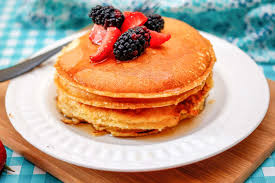

Pancakes

Description
Soft and fluffy breakfast cakes made from flour, milk, and eggs. They are usually served
with
honey, syrup, or fruits.
Ingredients
- Flour
- Milk
- Eggs
- Sugar
- Butter
Steps
- Mix flour, milk, eggs, and sugar in a bowl.
- Heat a pan and add a little butter.
- Pour batter into the pan.
- Cook until bubbles appear, then flip.
- Serve with syrup or honey.
Home